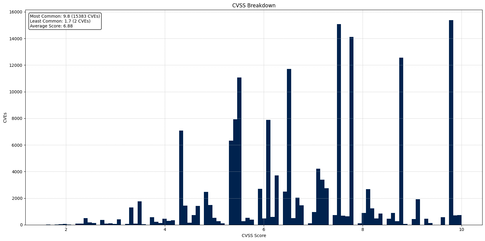
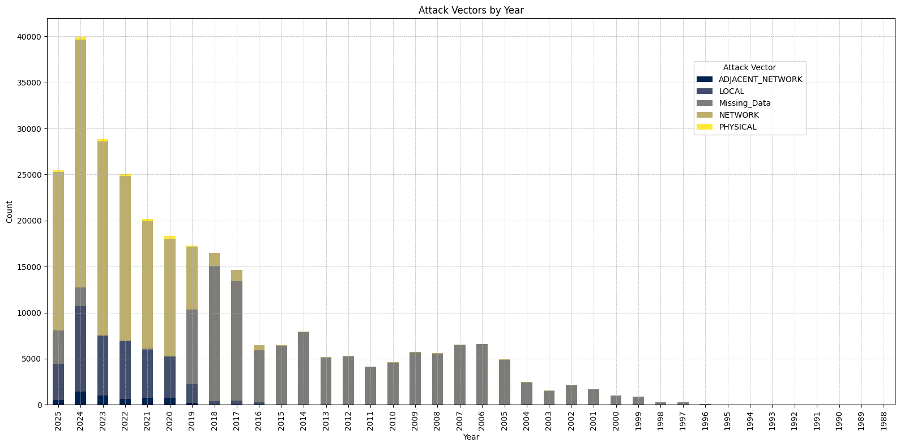

CVSS Data#
CVSS Graph#

CVSS Count#
| Loading ITables v2.4.4 from the internet... (need help?) |
Vector Count#
| Loading ITables v2.4.4 from the internet... (need help?) |
| Loading ITables v2.4.4 from the internet... (need help?) |
Yearly Breakdown#
| Loading ITables v2.4.4 from the internet... (need help?) |
